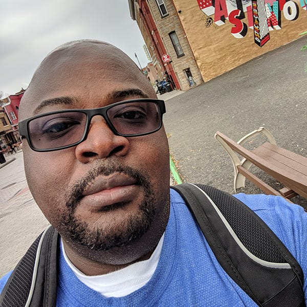
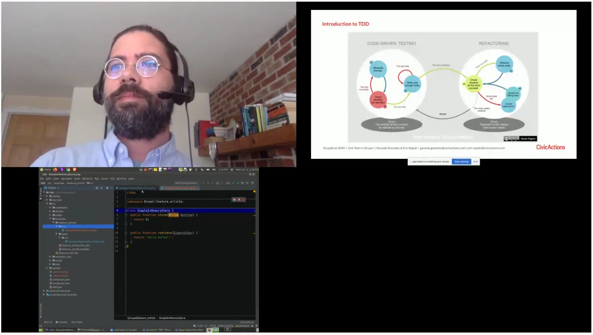
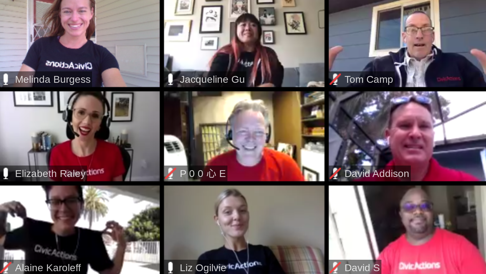

David Sumner is an open source enthusiast and an Associate Director of DevSecOps at CivicActions. He is a strong advocate of our team culture and collaborative practices, which keep us productive and accountable in our work.
What’s different about being an engineer at CivicActions?
David: The critical difference is the collaborative mindset that is built into our processes. There’s frequent information sharing, and we follow agile principles with daily scrums. We do small group working sessions to hash out existing issues or problems. And we have a supportive and welcoming culture, where we are encouraged to build connections and help each other.
I’ve worked several jobs in big tech companies where the “lone ranger” approach is encouraged — assignments are doled out, team members go off on their own to complete their individual tasks, then everyone comes back to share a finished product. And if they documented their work, then great! But if they didn’t, the results were often hard to duplicate or understand.
CivicActions is the total opposite of that. Learning to embrace collaboration determines either your success or your failure at work.
“Learning to embrace collaboration determines either your success or your failure at work.”

The “lone ranger” approach sounds bad for client success.
Absolutely. I’ve worked on teams where problems were received second or third-hand by those who needed to solve them — which led to incomplete deliverables or unnecessary features.
Here, I talk to customers and I talk to end users. I have my work reviewed by other people on a consistent basis so they can offer direct feedback. And we get the benefit of our coworkers’ experiences baked into the process early on.
“I talk to customers, and I talk to end users. I have my work reviewed by other people on a consistent basis so that they can offer direct feedback.”
How can engineers stay in sync with all the parts and players on a digital service project?
One of the obvious ways is through the methods of the agile process: the daily stand-ups and the project meetings. Tools tend to vary depending on the project. There’s often a heavy reliance on Confluence and Jira, but internally, we also use Trello and Slack. The important thing is to choose a Single Source of Truth (SSOT) and stick to it.
Different groups will always have their own preferences for collaboration, but we can easily adapt and use the tools that a client prefers for a particular project. Communication can come from any tool, at any time. You just have to be ready.
What are common pitfalls of agile practices you’ve seen on different engineering teams?
Agile can be done right, or it can be done horribly wrong. You can follow the principles from your own perspective, but your results might still differ from another’s. I think it’s important to align on definitions and expectations up-front, especially with new clients, because you all need to be operating from common ground.
Another critical aspect is having buy-in from everyone involved. People in leadership need to define and enforce a commitment to these principles, and we all need to adhere to best practices. Otherwise, people will just do what’s comfortable for them — like not participating in daily scrums, or failing to break work into manageable chunks to fit iterations.
“Doing agile” only part-way causes teams to fail instead of succeed.
Do engineers practice “paired programming” at CivicActions?
Yes, this is useful when two or more engineers are working on the same project and need to solve big problems quickly. With multiple minds working toward a solution, we can not only move faster, but also eliminate the extra steps of seeking peer review and feedback — because it’s built right into the process. When everyone’s ideas have been involved from the start, you often produce a better end product.
Also, it’s rare for two or three people to make the same rookie mistake that one person might make on their own. Paired developers have freedom to make a “good” mistake together that they can learn from and fix right away … rather than one person making a mistake that gets paved over or ignored.

“It’s rare for two or three people to make the same rookie mistake that one person might make on their own.”
How does team camaraderie improve the development process?
Especially with distributed teams, personal connections are essential to team productivity. You’re getting to know not just the people, but their working styles. Engineers run the gamut in how they approach problems — so we stay in touch to learn new methods from each other.
I’ve been in this business a long time, but I’ll be the first to admit I don’t have all the answers. So if I’m working with someone and they suggest a different approach, it’s a chance for me to discover a new way to a solution. It’s hard to get that experience if you don’t have an established rapport already.
I love the camaraderie at CivicActions. We share and learn from each other constantly. Instead of competition, it’s collaboration. If everyones adopts this mindset, teams in any discipline get a lot further, a lot faster. When people who work well together are going on all cylinders, it’s a thing to behold — they are of the same mind and have worked out all the little differences that hamper them from getting to their end goal. “
What’s the 30-Minute Rule and why is it important?
We use it to save time and energy across the team. If you’re stuck on a problem for longer than 30 minutes, you should seek input from someone who can help you work through it. Sometimes that means asking for advice in our Slack channels like #engineering or #how-we-work — and someone is always willing to jump on a quick Zoom call or take a look at my work and provide feedback. It’s super helpful, and normalizes the fact that everyone gets stuck sometimes.
Even if an immediate resolution can’t be reached, another person will often provide an alternative way of looking at the problem. It causes you to ask different questions that just might lead to a solution. It’s very easy to get tunnel vision, but this practice snaps you out of it.
“Even if an immediate resolution can’t be reached, another person will often provide an alternative way of looking at the problem. It causes you to ask different questions that might just lead to a solution.”
How do you see your work as having an impact on public services?
I like being part of a company that cares about impact. I see CivicActions bringing specialization — our knowledge about the individual products — to refine existing systems into something that actually works best for the end user. As a DevOps engineer, I know my work serves as the backbone for what is built.
I also act as a bridge between our developer groups and the IT people on the government side, who are responsible for providing a CICD infrastructure to support modernization projects. I enjoy helping them accomplish their goals, which are ultimately improving critical services for people who need them.

Learn more
- Quickly shifting to distributed teams in government
- Improving scrum team flow on digital service projects